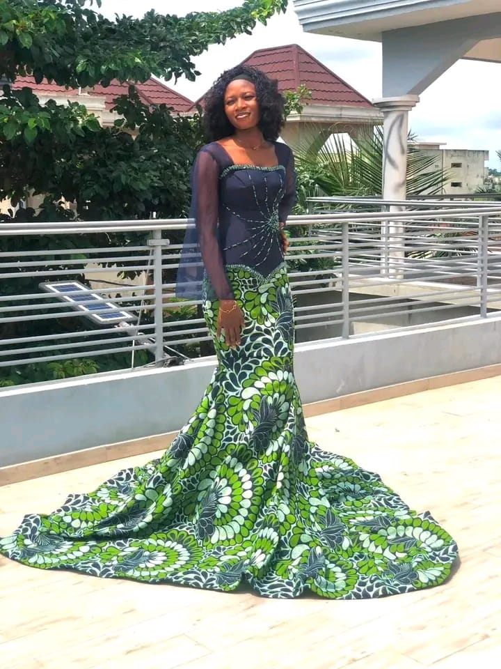
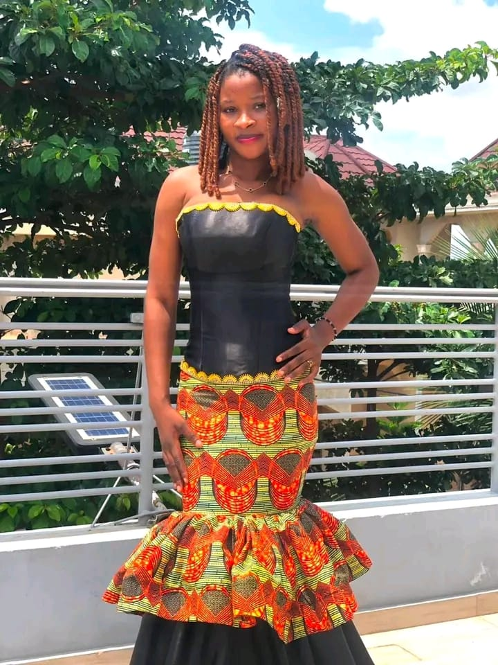
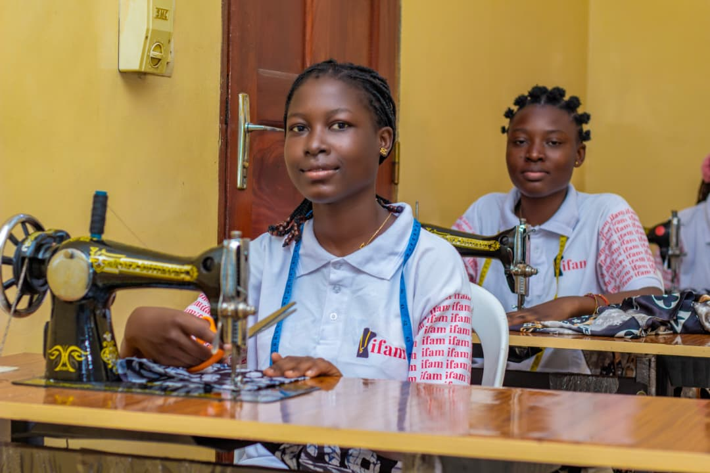
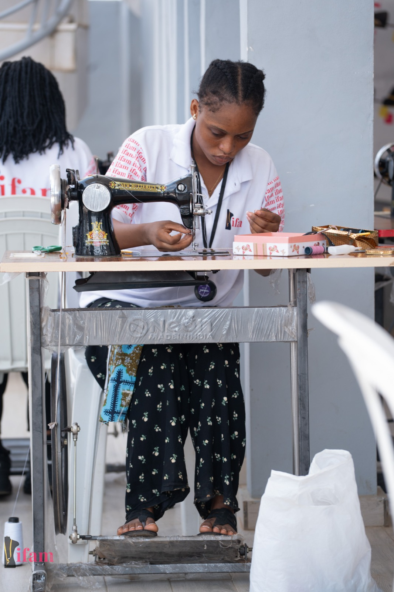
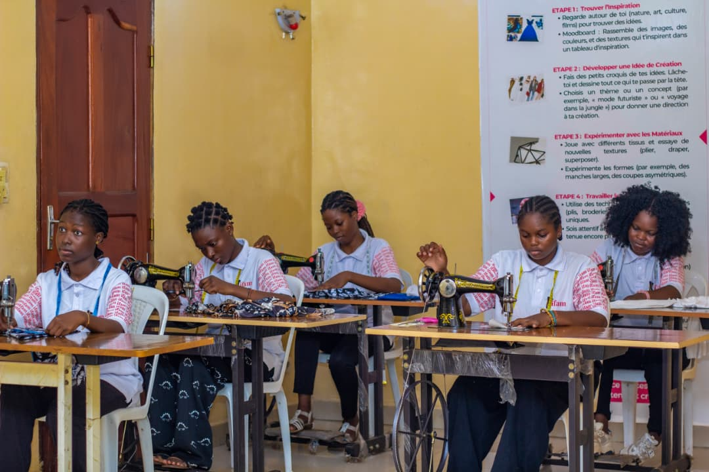
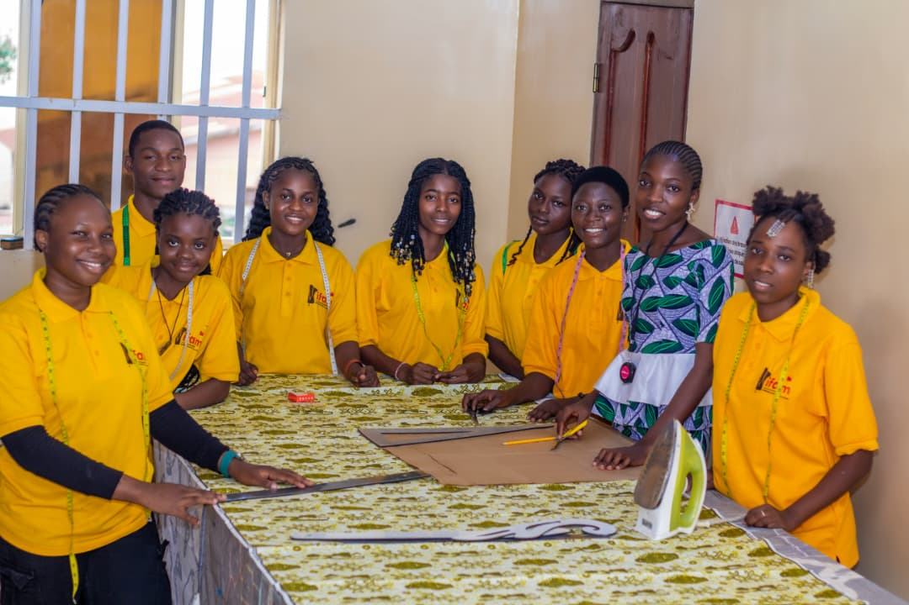
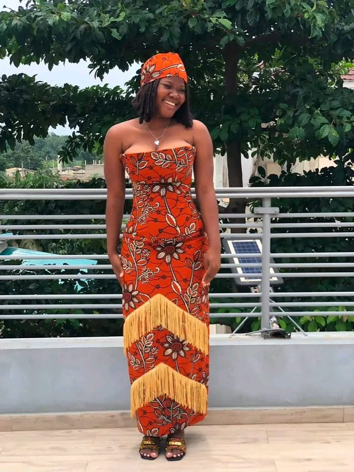
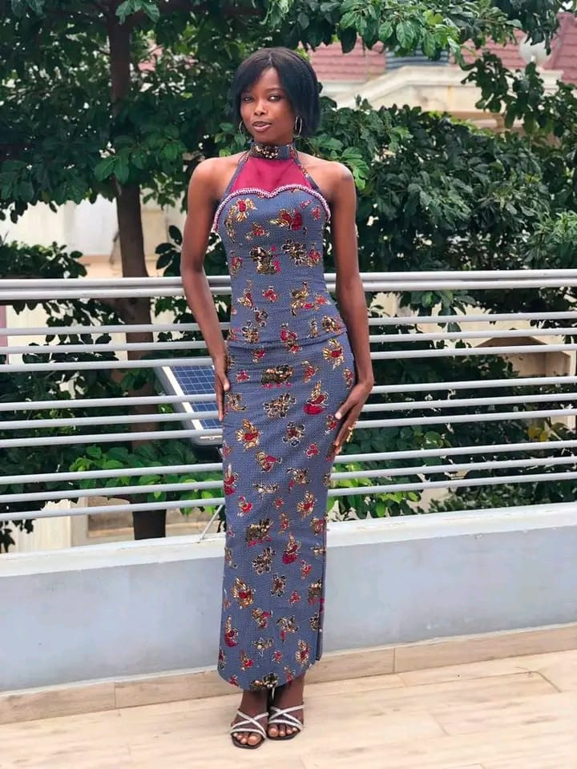
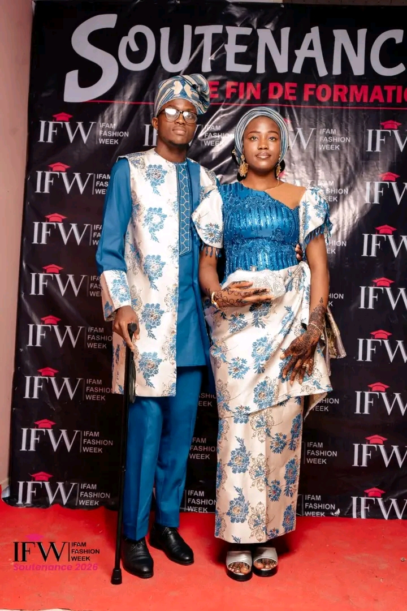

Cursus Complet · 2 AnsStylisme & Modélisme
Dessin de figurines, patronage à plat, drapé sur mannequin et confection de collections d'apparat présentées en soutenance officielle.
Institut professionnel de référence au Bénin.
Choisissez entre le Cursus Stylisme-Modélisme (2 ans) et la Formation Modélisme (1 an).
100 % pratique en atelier et diplôme reconnu par l'État.
Deux formations d'excellence homologuées par l'État pour vous former aux métiers de la mode.

Cursus Complet · 2 AnsDessin de figurines, patronage à plat, drapé sur mannequin et confection de collections d'apparat présentées en soutenance officielle.

Formation Technique · 1 AnL'architecture exacte du vêtement : prise de mesures, tracé géométrique des gabarits, gradation et coupe de vestiaires Homme et Dame.
Un environnement professionnel équipé pour apprendre les gestes justes de la coupe et de la confection.




Modèles d'apparat, robes de mariée et créations présentées lors des soutenances officielles.



Son retour d'expérience sincère sur sa formation pratique au sein de nos ateliers.
Des ateliers accessibles avec créneaux du matin (8h–12h) ou de l'après-midi (14h–18h).
Près du carrefour le Bélier. Grand atelier de modélisme et stylisme.
Accès facile depuis l'Étoile Rouge et Védoko.
À Fidjrossè calvaire, cadre spacieux et lumineux.
Proche du carrefour Arconville pour Calavi et environs.
Centre historique formant les talents de l'Ouémé et du Plateau.
Le grand pôle de référence dans le septentrion.
Au cœur du Zou pour Bohicon, Abomey et environs.
Atelier moderne desservant la zone de Ouidah à Cococodji.